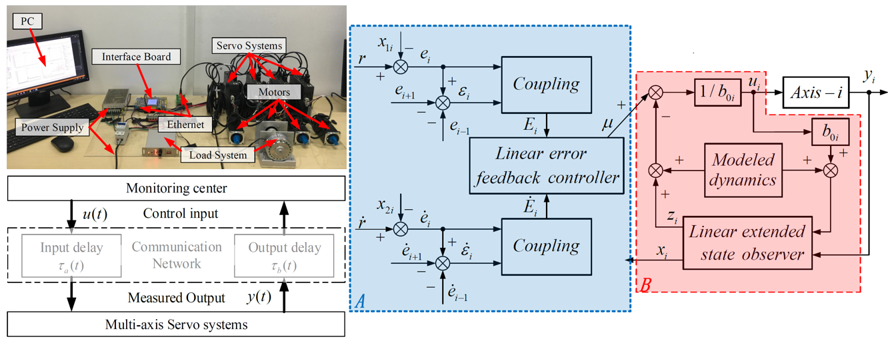
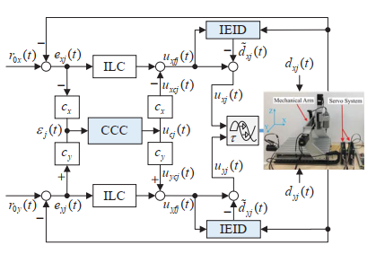

Research
Synchronization Motion Controls
|  |
Synchronization motion control (SMC) for multiaxis servo systems is a crucial part in the manufacturing industry, which is used to ensure that all machine shafts move synchronously and coordinately according to a certain proportion during the motion. With the rapid development of network communication technologies, both academia and industry have attempted to implement the high-precision SMC for networked motion control systems (NMCSs), for example, computer numerical control (CNC) systems, surface mount systems, electric multiple units, and robotic arms. Although the application of the NMCS brings many benefits, such as simplified wiring, powerful extensibility, and easy maintenance, it also raises several new challenging issues. One of them is the network-induced delay, which may seriously degrade system performance. An effective method to address this problem is to consider the time delay as a network disturbance and compensate for it using approaches based on disturbance observers.
Yao-Wei Wang, Wen-An Zhang, Li Yu. A linear active disturbance rejection control approach to position synchronization control for networked interconnected motion system [J]. IEEE Transactions on Control of Network Systems, 7 (4): 1746-1756, 2020. (ESI热点与高被引)
Yao-Wei Wang, Wen-An Zhang, Li Yu. GESO-Based Position Synchronization Control of Networked Multiaxis Motion System [J]. IEEE Transactions on Industrial Informatics, 16 (1): 248-257, 2020.
Qi Wu, Li Yu, Yao-Wei Wang and Wen-An Zhang. LESO-based position synchronization control for networked multi-axis servo systems with time-varying delay. IEEE-CAA Journal of Automatica Sinica, 2020, 7(4): 1116-1123, doi: 10.1109/JAS.2020.1003264.
Yao-Wei Wang, Tao Yan, Wen-An Zhang, Min Wu, Chengda Lu. Learning-enabled output feedback MPC based synchronization tracking control of multi-axis motion systems [J]. IEEE Transactions on Industrial Electronics, pp: 1-9, 2022. doi: 10.1109/TIE.2022.3203753.
Yao-Wei Wang, Andong Liu, Wen-An Zhang, Min Wu. Synchronization tracking control of networked multi-axis motion systems: A cooperative distributed model predictive control approach [J]. Control Engineering Practice, 126: 1-8, 2022. doi: 10.1016/j.conengprac.2022.105233.
Yao-Wei Wang, Xiang Wu, Wen-An Zhang, Min Wu. Equivalent-Input-Disturbance Based Position Synchronization Control of Networked Multi-axis Motion System [J]. IEEE Transactions on Industrial Electronics, 69 (8): 8317-8324, 2022. doi: 10.1109/TIE.2021.3106021.
Contour tracking control
|  |
Contouring tracking control is one of the most complicated tasks in motion control of multiaxis system, because it is related not only to individual-axis tracking accuracy, but also to the synchronization performance of multiaxis. Due to the rapid development of network communication technologies, networked control systems (NCSs) have increasingly gained attention. At the same time, network technologies have been introduced to motion control systems to overcome the complexity of wiring, the difficulty of maintenance, the lack of expansibility, and other weaknesses of conventional systems. However, some recently appeared problems need to be solved for a networked motion control system (NMCS). One of them is a network-induced delay, which may seriously degrade the performance of the system. In an NMCS, network-induced delays are aperiodic time-varying, and exogenous disturbances caused by unmodeled dynamics. The question of how to achieve high-precision contour tracking control of such an NMCS remains an unresolved problem. Robust control, a Smith predictor, a switch system, disturbance-observer-based control (DOBC) and other approaches have been presented to deal with delay. Among them, the DOBC approach, which treats a delay as a network disturbance (ND), has two degrees of freedom and does not need a trade-off between system stability and control performance.
Qi Wu, Shijian Dong, Wen-An Zhang and Li Yu. Online modeling of the CNC engraving system with dead-zone input nonlinearity. IEEE Transactions on Industrial Electronics, 2022, 69(1): 774-782, doi: 10.1109/TIE.2020.3044819.
Xiang Wu, Guangpu Huang, Fanghong Guo*, et al. An adaptive-filter based equivalent-input-disturbance approach for networked control systems with measurement noise. IEEE Transactions on Industrial Electronics, 70(6): 170-6179, 2022.
Xiang Wu, Jinhua She, Li Yu*, et al. Contour tracking control of networked motion control system using improved equivalent-input-disturbance approach. IEEE Transactions on Industrial Electronics, 68(6): 5155-5165, 2021.
Xiang Wu, Hui Dong*, Jinhua She, Li Yu. High-precision contour-tracking control of Ethernet-based networked motion control systems. IEEJ Journal of Industry Applications, 9(1): 1-10, 2020.
Yao-Wei Wang, Wen-An Zhang, Hui Dong, Li Yu. A LADRC based fuzzy PID approach to contour error control of networked motion control system with time‐varying delays [J]. Asian Journal of Control, 22 (5): 1973-1985, 2020.
Yao-Wei Wang, Wen-An Zhang, Hui Dong, Li Yu. A GESO based MPC approach to contour error control of networked motion control system [J]. International Journal of Systems Science, 50 (11):2216-2225, 2019.
Yao-Wei Wang, Andong Liu, Wen-An Zhang, Li Yu. GESO-based control for networked systems with time-varying delays [J]. Measurement, 133: 281-287, 2019.
Yao-Wei Wang, Wen-An Zhang, Hui Dong, Jun-Wei Zhu. Generalized Extended State Observer Based Control for Networked Interconnected Systems with Delays [J]. Asian Journal of Control, 20 (3): 1253-1262, 2018.
Intelligent Fault Diagnosis
Faultdiagnos1s1Sapproacha11designed to understand and assesstheoperational state of mechanical equipment.MAEW-0determining its general or partial normalityor abnormality which is employed in thehealth management of sizable machineryincluding wind turbines,ship motors, gasturbines.aviation engines.andcranesNevertheless,the progression of intelligentmanufacturing has resulted in an escalationof structural complexity and precision in1nechan1calequ1pmnent.introduc1ngchallengessuchasnonlinearity,nonstationarity,incompleteness,incompleteinformation, and insufficient fault categorycoverage inoperationalonitoringdataConsequently, time and frequency domain feature extraction methods based on wavelet packetdecomposition and cepstrum analysis are used to extract features that characterize prominentfaults. Simultaneously, multiscale analysis methods are applied to capture additional fault-relatedinformation,thereby enhancing the accuracy of fault diagnosis.
Qi Wu, Chen Dong, Eangheng Guof, Lei Wang, Xiang Wu and Changyu Wen, Privacypreserving federated learning for power transformer fault diagnosis with unbalanced dataIEEE Transactions on Industrial Informatics, vol.20,no.4,pp.5383-5394, 2024. doi10.1109/TII.2023.3333914.
Dajian Hung,Wen-An Zhang and Steven X. Ding. Bearing fault diagnosis with incompletetraining data: Fault data with partial diameters. lEEE Transactions on Automation Science andEngineering, Early access. doi; 10.1109/TASE.2023.3294811.
Dajian Huang, Wen-An Zhang, Eanghong Guo, Weiing Liu and Xiaoming Shi. Waveletpacket decomposition-based multiscale CNN for fault diagnosis of wind turbine gearboxIEEE Transactions on Cybernetics, 2023, 53(1):443-453. doi; 10.1109/TCYB.2021.3123667.
Dajian Huang, Xiufang Shi and Wen-An Zhang. False data injection attack detection forindustrial control systems based on both time- and frequency-domain analysis of sensor data.IEEE Intemet ofThings Jounal, 2021,8(1):585-595. doi:; 10.1109/JOT.2020.3007155.
Privacy-Preserving Federated Learning
Power transformer (PT) is one type of transformer used for electrical energy transmission. The health of the PT plays an essential role in the reliability and supply sustainability of electricity. Recently, there have been numerous literatures devoted to improving the maintenance and repair capability of PTs from the perspective of the prognostics health management. Among them, unbalanced learning and data security in power transformer fault diagnosis are still open issues. The emergence of federated learning (FL) has provided a secure and distributed learning framework. But, there are still two issues that need to be addressed before using the FL-based fault diagnosis methods. The first issue is the statistical challenge brought by the variability of unbalanced data in data quantity and category distribution. The second issue is the trade-off between model performance and the level of privacy protection. To address such challenges, we have designed data-sharing and privacy-preserving strategies, that is alleviating the impact of imbalanced data on model training by sharing global data and safeguarding private data by injecting Gaussian noise into the uploaded parameters.
Qi Wu, Chen Dong, Fanghong Guo†, Lei Wang, Xiang Wu and Changyun Wen, Privacy-preserving federated learning for power transformer fault diagnosis with unbalanced data. IEEE Transactions on Industrial Informatics, 2023, Early access.
Fault-tolerant Control
Multi-agent systems (MAS) have received increasing attention due to their wide range of applications in areas such as collaboration, formation flying, and vehicle networking. However, the probability of failure has increased greatly due to the expansion of the system scale. The failure of any node may spread its effect to the whole system through the communication network. Therefore, the problem of fault-tolerant control of MAS has increasingly become a research focus. Existing observer-based frameworks have some limitations: 1) Most of the existing observers are designed offline, i.e., the parameters are chosen in advance, which lacks flexibility.2) There is no explicit optimization scheme for online fault estimation. To address these challenges, a new structured distributed intermediate estimator is proposed. In addition, a reinforcement learning estimation strategy is introduced to achieve online dynamic tuning of key parameters, thus improving the real-time estimation performance.
Caoyuan Gu, Junwei Zhu†, Wen-An Zhang, Li Yu and Hui Dong. Intrusion-tolerant synchronous control for networked multi-axis motion control system, Control and Decision, 2019, 34(11): 2289-2296, doi: 10.13195/j.kzyjc.2019.0537. (in Chinese)
Junwei Zhu†, Caoyuan Gu, Steven X. Ding, Wen-An Zhang, Xin Wang and Li Yu. A new observer-based cooperative fault-tolerant tracking control method with application to networked multiaxis motion control system. IEEE Transactions on Industrial Electronics, 2020, 68(8): 7422-7432, doi: 10.1109/TIE.2020.3001857.
Junwei Zhu†, Caoyuan Gu, Ding Wang, Wen-An Zhang and Xin Wang. Design of an intelligent cooperative fault-tolerant trajectory tracking control system for multi-servo motors. Control Theory & Applications, 2021, 38(7): 1023-1032, doi: 10.7641/CTA.2021.00627. (in Chinese)
Multi-source remote sensing image interpretation
With the continuous development of satellite constellations worldwide, more and more earth observation satellites have been launched into the orbit. On one hand, an abundance of high-resolution images is generated by the spaceborne imaging equipment, and needs to be interpretated effectively for various remote sensing applications. On the other hand, it is also important to achieve dynamic estimation of the on-orbit satellite through observation from multi-source sensors, such as optical and radar equipment. To address these challenges, the utilization of deep learning techniques has emerged as a prevalent approach. Some exploratory methods are proposed based on the information fusion among multi-source data, including SAR/ISAR, optical and DSM data.
Robot compliant control
 |
Robotic tasks with rich physical interactions, such as polishing, assembly and human-robot collaborations, propose demands for the robot compliant property to ensure operation safety. However, to provide the desired compliant property for robots, we will face two challenging problems. The first one is that we need to accurately establish robot dynamic models, based on which the compliant control could be designed. Offline identification approaches suffer from the accuracy and generalization limitations, and online learning approaches with real-time constraints will be more suitable. The second one is the contradiction between the robot compliance and the tracking accuracy. A useful way to handle this issue is adapting a strategy to adaptively trade-off the robot compliance and accuracy, such as using variable impedance control.
|
Human-behaviors learning
 |
Human-behaviors learning acts as an important role in the human-robot collaboration. It can be used to increase the cognition of robots to humans, and thus increase the collaboration safety, efficiency. Moreover, it can also be directly used for robot imitation learning. Human-behaviors are always encoded by dynamic systems (DSs), and according to the different types of the learned DSs, human-behaviors learning algorithms can be divided into two types. The first type learns non- autonomous DSs (N-ADSs) where behaviors are driven by the time. This type gains high reproduction accuracy with sacrifice of the flexibility. Moreover, it also inherits disadvantages of regression learning, such as the model expressive limitation and demands of manually feature design, etc. Using non-parametric learning approach might solve these issues well. The second type leans autonomous DSs (ADSs), and the stability of the learned ADSs are mostly cared. However, there exists contradictions between the system stability, model accuracy and model generalization capacity. A feasible way to handle these contradictions is learning data-driven Lyapunov functions.
|